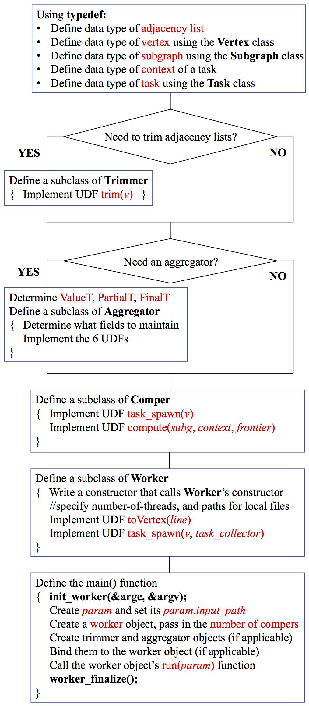

Other Documentations: [How to Deploy], [How to Run], [How to Program]
This page is for quick reference if you are writing a G-thinker program. If you have not read our programming manual yet, it is strongly recommended to read through that webpage first.
If you need help with debugging when facing segment faults, we recommend to use Valgrind (compile with "-g", enable "--error-limit=no" and ignore JVM memory-leak errors caused by libhdfs before graph is loaded).
Workflow for writing a G-thinker program
The workflow of writing a G-thinker program is given as follows. We will describe our APIs in this order.

The best exercise is to study our application code for Triangle Counting, Maximum Clique Finding and Subgraph Matching.
The Vertex class
template <class KeyT, class ValueT, class HashT = DefaultHash<KeyT> >
//KeyT: data type of vertex ID
//ValueT: data type of adjacency list
//If KeyT = VertexID (defined in util/global.h), HashT can be omitted
class Vertex {
public:
KeyT id; //vertex ID field
ValueT value; //adjacency list field
...
};
The Subgraph class
template <VertexT>
//VertexT: please provide the above user-specified vertex class
class Subgraph{
public:
typedef typename VertexT::KeyType KeyT;
typedef typename VertexT::ValueType ValueT;
...
//Add (deep-copy) a vertex object into the current subgraph
void addVertex(VertexT & vertex);
//A vertex with ID vid exists in the current subgraph?
bool hasVertex(KeyT vid);
//Return the vertex with ID id in the current subgraph
//If exists, return a pointer to the vertex
//Otherwise, return NULL
VertexT * getVertex(KeyT id);
...
};
The Task class
template <class VertexT, class ContextT = char>
//VertexT: please provide the previous user-specified vertex class
//ContextT (optional): provide the type of data that a task keeps
class Task {
public:
...
typedef typename VertexT::KeyType KeyT;
...
typedef Subgraph SubgraphT;
...
SubgraphT subG;
ContextT context;
...
//Request for the vertex object with ID = id
//for use by the current task's next iteration of compute(.)
void pull(KeyT id)
...
};
The Trimmer class
template <class VertexT>
//VertexT: please provide the previous user-specified vertex class
class Trimmer {
public:
//please specify how to trim a vertex object's adjacency list
virtual void trim(VertexT & v) = 0; //UDF
};
The Aggregator class
template <class ValueT, class PartialT, class FinalT>
//ValueT: the type of data to be aggregated to the aggregator
//PartialT: the type of local aggregator's status
//FinalT: the type of globally aggregated status
class Aggregator {
public:
//how to initiate the fields of an aggregator object
//usually called at the very beginning of a job
virtual void init() = 0; //UDF1
//usually called in Comper::compute(.)
//to aggregate value "context" to the aggregator
virtual void aggregate_udf(ValueT & context) = 0; //UDF2
//thread-safe wrapper of UDF2
void aggregate(ValueT & context);
//called when local aggregators synchronize their statuses
//worker 0 gathers statuses of workers 1, 2, ..., and
//calls stepFinal_udf(.) once using each received status as input
virtual void stepFinal_udf(PartialT & part) = 0; //UDF3
//thread-safe wrapper of UDF3
void stepFinal(PartialT & part); //usually for internal use
//returns the status of the current local aggregator
//called by workers 1, 2, ...
virtual void finishPartial_udf(PartialT & collector) = 0; //UDF4
//thread-safe wrapper of UDF4
virtual void finishPartial(PartialT & collector);
//returns the global status obtained by synchronization
//called by worker 0
virtual void finishFinal_udf(FinalT & collector) = 0; //UDF5
//thread-safe wrapper of UDF5
virtual void finishFinal(FinalT & collector);
//the input is the global status obtained by synchronization
//init_udf(.) is called after each synchronization
//to update the local aggregator's status if necessary
virtual void init_udf(FinalT & prev) = 0; //UDF6
//thread-safe wrapper of UDF6
void init_aggSync(FinalT & prev); //usually for internal use
};
The Comper class
template <class TaskT, class AggregatorT = DummyAgg>
//TaskT: please provide the previous user-specified task class
//AggregatorT (optional): provide the above user-specified aggregator class
class Comper {
public:
...
//UDF1: how to spawn task(s) from a vertex v?
virtual void task_spawn(VertexT * v) = 0;
//UDF2
virtual bool compute(SubgraphT & g, ContextT & context, vector & frontier) = 0;
...
//what can be used in the UDFs?
ofstream fout; //can be used to output anything to a local file
//to pull a vertex for the current task for use in next iteration:
void pull(KeyT id); //only for use in UDF2
AggregatorT* get_aggregator(); //get (pointer to) the local aggregator
void add_task(TaskT * task) //add a task to the comper's task queue
};
The Worker class
template <class Comper>
//Comper: please provide the above user-specified comper subclass
class Worker
{
public:
...
//constructor:
Worker(int comper_num, string local_disk_path = "buffered_tasks", string report_path = "report");
//comper_num: number of comper threads run by each worker/machine
//local_disk_path: path of the directory under which spilled tasks are buffered
//report_path: path of the directory under which Comper::fout outputs to the files
...
//bind with a trimmer object
void setTrimmer(TrimmerT* trimmer);
//bind with an aggregator object
void setAggregator(AggregatorT* ag);
//get the local aggregator object
AggregatorT* get_aggregator();
...
//UDFs:
//how to parse a line into a vertex object?
virtual VertexT* toVertex(char* line) = 0;
//how to spawn task(s) from vertex v and add them to tvec
virtual void task_spawn(VertexT * v, vector & tvec) = 0;
...
//to start a job
void run(const WorkerParams& params);
//params.input_path should contain the path of the input data on HDFS
};
Global variables and functions
Header file "util/global.h" is typically included to every program file, and thus the global variables and functions defined there can be accessed anywhere. Below are some global variables and functions that may be useful:
//you can directly use hash_map and hash_set because:
...
#include <ext/hash_set>
#include <ext/hash_map>
...
#define hash_map __gnu_cxx::hash_map
#define hash_set __gnu_cxx::hash_set
...
int _my_rank; //the rank (i.e. ID) of the current worker
//rank is the terminology of MPI
int _num_workers; //the total number of workers
//the above two variables are set by the following function
//the function must be called at the begining of the main() function
void init_worker(int * argc, char*** argv);
//the following function must be called at the end of main()
void worker_finalize()
...
struct WorkerParams {
//input graph's path on HDFS:
string input_path;
//whether to overwrite an existing output path on HDFS:
bool force_write;
bool native_dispatcher; //just set to false
...
};
//vertex ID's type (int by default)
typedef int VertexID;
//if a 64-bit ID is needed, you may change "int" to "long long"
...